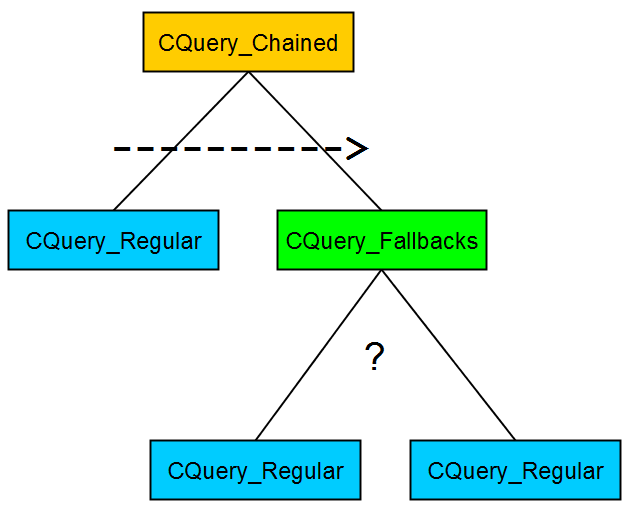

Обзор
В UQS есть 3 типа запросов:
- Обычный запрос
- Резервный запрос
- Связанный запрос
Запрос обычно представляет собой комбинацию этих методов, создавая таким образом иерархия в виде дерева. Резервные варианты и Прикованный запросы являются составными запросами (т.е. являются филиалы в дереве), тогда как Обычный запросы выполняют тяжелую работу по оценке элементов (т. е. они листья в дереве).

Обычный запрос (CQuery_Regular)
Это тот тип запроса, о котором чаще всего думают как о «запросе». Он делает следующее:
- Генерировать элементы
- Оцените созданные элементы
- Придумайте лучшие предметы из категории «N»
Обычный запрос не может иметь дочерних запросов.
Если использовать аналогию с деревом поведения, то этот тип запроса будет Действие узел в дереве.
Резервный запрос (CQuery_Fallbacks)
Это составной запрос, который будет пытаться запускать один дочерний запрос за другим, пока не будет найдено несколько допустимых элементов. Если ни один из дочерних элементов не найдет ни одного элемента в наборе результатов, то в конечном итоге будет возвращено 0 элементов. Резервные запросы очень распространены и обычно используются для предоставления альтернативного запроса с менее ограничительными условиями или параметрами, если «основной» запрос не находит никаких элементов.
Если использовать аналогию с деревом поведения, то этот тип запроса будет Селектор узел в дереве.
Связанный запрос (CQuery_Chained)
Связанный запрос — это составной запрос, который позволяет выполнять более сложные запросы. Его можно использовать для переноса результатов предыдущего запроса в следующий запрос. Там элементы можно использовать в качестве входных параметров для генераторов или оценщиков. По сути, они позволяют комбинировать предыдущий набор результатов с вновь созданными элементами. Примером может служить определение того, какие из позиций «N» видны наблюдателям «M».
Если использовать аналогию с деревом поведения, то этот тип запроса будет Последовательность узел в дереве.